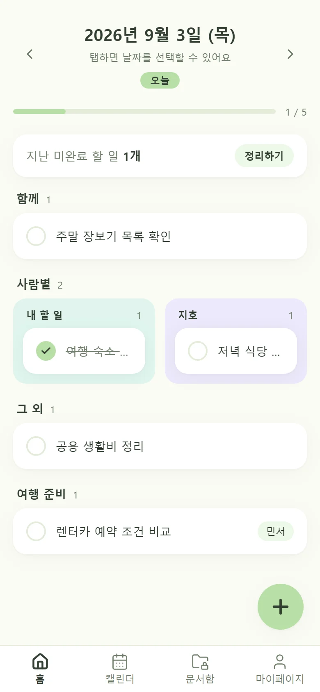
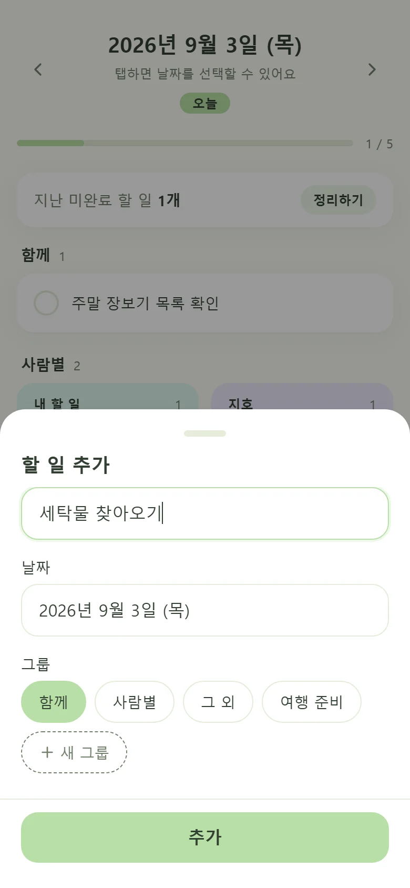
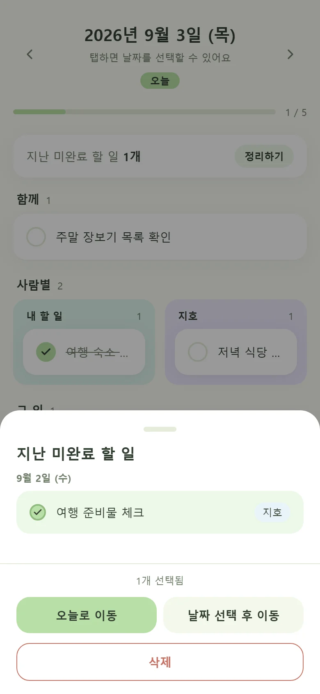
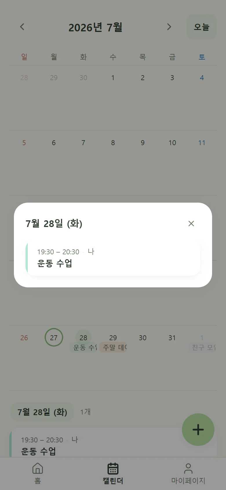
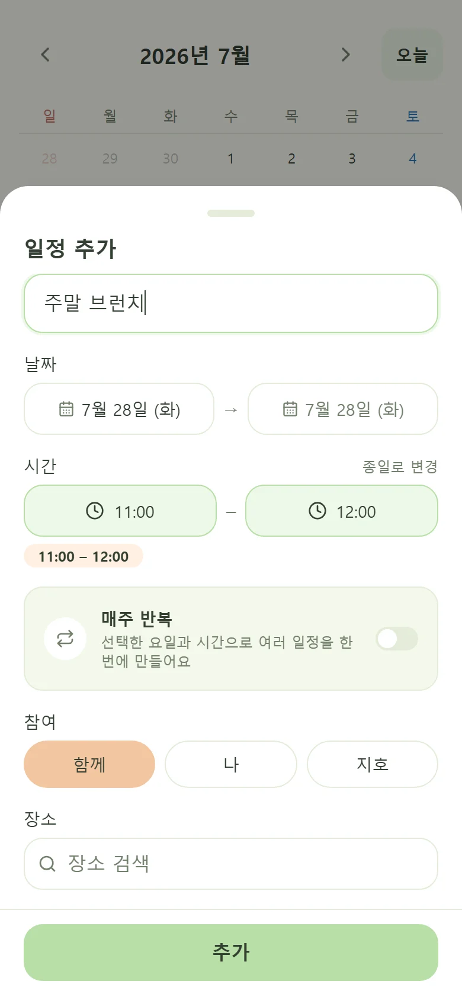
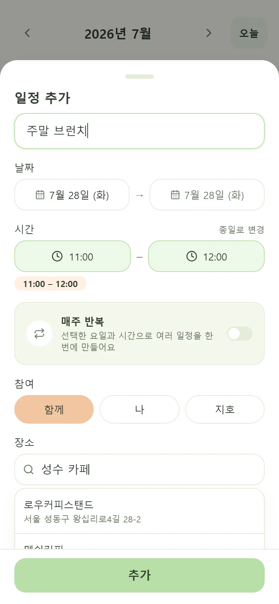
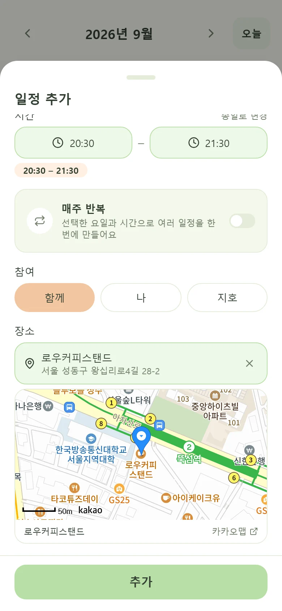

함께와 각자의 구분
공동 일정, 내 일정과 파트너의 일정·할 일을 한눈에 구분하기 어려웠습니다.
PROJECT OVERVIEW · MOBILE PWA
결혼 준비를 하며 함께 움직여야 할 일정과 각자의 일정·할 일을 한눈에 볼 필요가 있었습니다. 필요하지 않은 기능은 덜어내고, 저희에게 필요한 흐름만 담은 커플 공유 투두·캘린더를 만들었습니다.
OWNER RESPONSIBILITY
Next.js · TypeScript · Supabase · Realtime · Web Push

01 · PROBLEM
결혼 준비를 하며 공동 일정, 개인 일정과 각자 맡은 할 일이 동시에 늘었습니다. 기존 앱은 광고와 사용하지 않는 기능까지 보여줘, 둘이 매일 필요한 내용만 빠르게 확인하기에는 번거로웠습니다.
공동 일정, 내 일정과 파트너의 일정·할 일을 한눈에 구분하기 어려웠습니다.
파트너와 진행 상태를 따로 공유해야 해 변경 내용을 놓치거나 같은 내용을 반복해서 확인했습니다.
광고와 복잡한 설정 때문에 우리에게 필요한 정보만 빠르게 확인하기 어려웠습니다.
02 · PRODUCT IN ACTION
홈에서 함께·나·파트너의 할 일과 지난 미완료를 확인합니다. 캘린더에서는 날짜·시간·반복·참여자와 장소까지 한 흐름으로 관리합니다.
TODAY · OVERVIEW
함께·내 할 일·파트너 할 일과 지난 미완료를 한 화면에서 구분해 확인합니다.

TODO · ASSIGN
화면을 이동하지 않고 날짜와 함께·사람별·커스텀 그룹을 지정합니다.

TODO · CARRY OVER
지나간 날짜에 남은 할 일을 선택해 오늘로 옮깁니다. 놓친 일을 묻어두지 않고 지금의 계획으로 다시 이어갑니다.

CALENDAR · OVERVIEW
월 전체의 일정을 파악한 뒤 선택한 날짜의 시간·참여자·등록 장소를 팝업에서 바로 확인합니다.

CALENDAR · CREATE
날짜와 시간, 반복 여부와 참여자를 하나의 흐름에서 설정해 일정 등록 부담을 줄였습니다.

KAKAO LOCAL API · SEARCH
카카오 Local API의 장소명과 주소 검색 결과를 일정에 바로 연결합니다.

KAKAO MAP · PREVIEW
장소명과 주소, 지도 미리보기를 함께 제공해 잘못된 장소를 등록하는 실수를 줄였습니다.
탭으로 메뉴를 바꾸고, 이전·다음 버튼이나 방향키·스와이프로 화면을 넘길 수 있습니다.
03 · PRODUCT DECISIONS
기능을 늘리기보다 항목의 담당, 지난 할 일의 처리 방식, 일정과 할 일을 나누어 보여주는 기준을 먼저 정했습니다.
같은 항목을 함께 보면서도 누가 담당하는지 바로 알 수 있도록 함께·나·파트너 구분과 색상 규칙을 모든 화면에 동일하게 적용했습니다.
지난 미완료는 홈에서 개수만 알리고, 필요한 항목을 골라 오늘이나 다른 날짜로 옮기거나 삭제하도록 했습니다.
홈은 오늘 할 일과 지난 미완료 할 일들을, 캘린더는 날짜·시간·장소가 있는 일정을 중심으로 보여줍니다. 한 서비스 안에서 빠르게 이동하되, 성격이 다른 정보가 한 화면에 겹치지 않도록 구분했습니다.
04 · ENGINEERING CASES
화면 이동을 반복한 뒤 캘린더가 멈추는 현상이 있었습니다.
createClient()를 호출할 때마다 별도 client가
만들어져 Realtime 연결 관리 주체도 늘어났습니다.
처음 만든 client를 저장하고 이후 호출에서도 같은 client를 반환하도록 변경했습니다.
현재 방식 하나의 client 안에서 일정·투두 채널을 각각 사용하며, 화면이 전환될 때는 해당 화면이 만든 채널의 구독을 해제합니다.
일정이 등록되거나 수정되면 DB trigger가 알림 예약을 갱신합니다.
기존 미발송 예약을 취소하고 담당자와 사용자 설정에 맞춰 다시 생성합니다.
pg_cron이 Edge Function을 호출하고, Service Worker가 알림을 눌렀을 때 해당 날짜를 엽니다.
운영 범위 pg_cron은 5분 간격으로 발송 대상을 확인합니다. 브라우저 Web Push의 특성상 정확한 도착 시각과 전달 자체를 보장하는 알림으로 설명하지 않습니다.
iOS 홈 위젯에서 일정을 보려고 OAuth, 토큰 갱신과 네이버 일정 자동 등록을 구현했습니다.
검토 당시 공개 API는 일정 추가만 지원해 수정·삭제와 역방향 변경을 맞출 수 없었습니다.
연동 코드와 토큰 데이터를 제거하고, Scriptable이 하루투두 API의 원본을 읽는 조회형 위젯으로 바꿨습니다.
남은 제약 Scriptable은 별도 앱이 필요한 보조 화면입니다. 갱신 토큰은 iOS Keychain에 보관하지만 실제 위젯 갱신 시점은 iOS가 결정하므로 실시간 화면으로 설명하지 않습니다.
05 · SYSTEM DESIGN
Auth는 사용자를 확인하고 RLS는 커플 공유 데이터에 접근할 수 있는지 검사합니다. API 키와 관리자 권한이 필요한 작업은 브라우저 밖에서 실행합니다.
로그인 · 커플 데이터 · 실시간 반영
외부 API를 서버에서 호출
관리자 권한이 필요한 작업
Supabase Auth가 로그인한 사용자의 ID를 확인합니다. 로그인과 데이터 접근 권한은 별도로 판단합니다.
투두와 일정은 couple_id로 묶고, RLS가 요청 사용자가 해당 커플의 구성원인지 확인합니다.
카카오 REST API 키와 Supabase 관리자 권한은 Next.js API와 Edge Function 안에서만 사용합니다.
06 · AI-ASSISTED DEVELOPMENT
초기 MVP는 Claude Code로 빠르게 구축했습니다. 이후에는 Codex가 기존 코드의 영향 범위를 확인하고 구현과 검증을 진행하며, 기능 우선순위와 최종 결과는 직접 판단하고 있습니다.
MVP · CLAUDE CODE
결혼 준비에 필요한 일정과 투두 흐름을 정리하고, Claude Code와 초기 제품을 구현해 약 2주 만에 사용을 시작했습니다.
OPERATE · CODEX
기존 코드의 영향 범위와 변경 계획을 먼저 확인한 뒤, 승인한 범위만 구현하고 자동 검사와 실제 화면으로 결과를 검증하고 있습니다.
ROLE SPLIT
DIRECT DECISIONS
AI EXECUTION
07 · USER FEEDBACK
2026년 6월부터 배우자와 실제 일정과 할 일을 관리하고 있습니다. 현재 편리하게 사용하는 흐름과, 사용 중 발견한 불편을 반영해 추가한 기능을 나눠 정리했습니다.
PARTNER FEEDBACK · 1 USER
일정과 할 일을 한곳에서 보고, 함께 할 일과 각자 할 일을 바로 구분할 수 있어서 편했습니다.
2026년 6월부터 하루투두를 함께 사용하는 배우자의 의견을 요약했습니다.
앱을 번갈아 확인하지 않고 하루투두 안에서 일정과 할 일을 함께 관리합니다.
함께, 나, 파트너 항목을 나눠 누가 맡은 일인지 바로 확인하고 완료 상태를 공유합니다.
지난 날짜에 남은 미완료 할 일을 홈에서 알리고, 필요한 항목만 선택해 오늘로 옮길 수 있도록 추가했습니다.
iOS 홈 화면에서 월간 일정과 할 일을 확인할 수 있는 조회형 Scriptable 위젯을 추가했습니다.